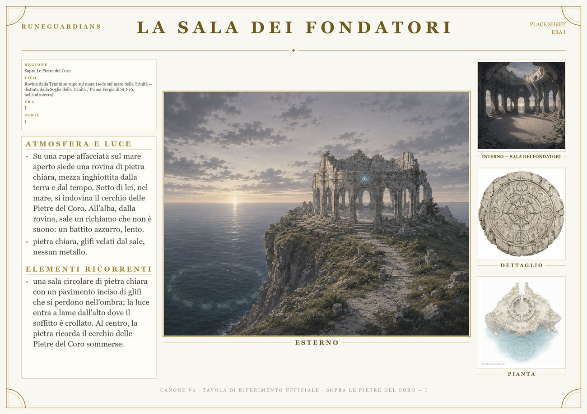

La Sala dei Fondatori

TipoRovina della Trinità su rupe sul mare (sede sul mare della Trinità — distinta dalla Soglia della Trinità / Prima Forgia di S1 N19, nell'entroterra)
RegioneSopra Le Pietre del Coro
FilosofiaSperanza
EraI
Appare inS1 N6
Su una rupe affacciata sul mare aperto siede una rovina di pietra chiara, mezza inghiottita dalla terra e dal tempo. Sotto di lei, nel mare, si indovina il cerchio delle Pietre del Coro. All'alba, dalla rovina, sale un richiamo che non è suono: un battito azzurro, lento.
pietra chiara, glifi velati dal sale, nessun metallo.